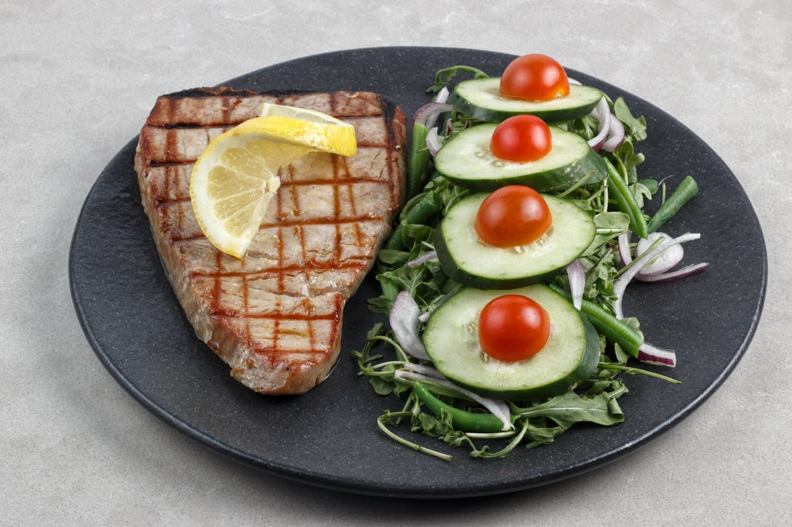

Tuna
Quick answer
Tuna can fit into an anti-inflammatory eating pattern, especially as a convenient protein for salads, bowls, and quick lunches. For regular use, canned light tuna is usually the more practical lower-mercury choice, while albacore, yellowfin, and tuna steaks should be used more selectively.
What it is
Tuna is a group of large ocean fish sold canned, pouched, fresh, frozen, or as steaks. Common types include skipjack, albacore, yellowfin, and bigeye.
For everyday meals, most people use canned light tuna or canned albacore. Light tuna is often made from skipjack and tends to be lower in mercury than albacore or larger tuna species.
Why tuna may support an anti-inflammatory diet
Tuna provides protein, selenium, vitamin B12, niacin, and some omega-3 fats. It can help make a vegetable-forward meal feel more complete without needing much cooking.
Its biggest practical advantage is convenience. A can or pouch of tuna can turn greens, beans, quinoa, tomato, avocado, or whole-grain toast into a fast meal. The tradeoff is that tuna should be rotated with other fish and protein sources because mercury exposure depends on type and frequency.
How to choose tuna
- Use canned light tuna more often when you want a lower-mercury pantry option.
- Use albacore or white tuna less often than light tuna because it generally contains more mercury.
- Be more selective with yellowfin tuna and tuna steaks.
- Avoid bigeye tuna if mercury is a concern; FDA lists it as a choice to avoid.
- Rotate tuna with salmon, sardines, mackerel, beans, lentils, eggs, or yogurt.
How to eat tuna
- Mix tuna with olive oil, lemon, celery, herbs, and black pepper for a lighter tuna salad.
- Add tuna to a bowl with quinoa, spinach, tomato, cucumber, and avocado.
- Serve tuna on whole-grain toast with mustard, greens, and sliced tomato.
- Use tuna with chickpeas, parsley, olive oil, and lemon for a quick lunch.
- Pair tuna with roasted vegetables instead of relying on mayonnaise-heavy meals every time.
Shopping and storage
Choose tuna packed in water or olive oil depending on how you plan to use it. Compare sodium levels, especially if you eat canned foods often. Unopened cans and pouches are useful pantry backups; once opened, refrigerate tuna and use it promptly.
FAQ
Is tuna anti-inflammatory?
Tuna can support an anti-inflammatory eating pattern as a protein-rich fish that provides some omega-3 fats. It should be used as one option within a varied pattern, not as a treatment or as the only fish choice.
Which tuna is lower in mercury?
According to FDA fish advice, canned light tuna, including skipjack, is listed as a Best Choice, while albacore or white tuna and yellowfin tuna are listed as Good Choices. Bigeye tuna is listed as a choice to avoid.
Is canned tuna healthy?
Canned tuna can be a useful pantry protein, especially when paired with vegetables, whole grains, beans, olive oil, and herbs. Compare sodium levels and rotate it with lower-mercury fish such as salmon, sardines, and mackerel.
Should I eat tuna every day?
Tuna is better used in rotation rather than every day, especially because mercury levels vary by type. If you are pregnant, breastfeeding, feeding children, or managing a health concern, follow official fish guidance and ask a qualified professional for personal advice.
Evidence note
This page describes tuna as a practical food within a broader anti-inflammatory eating pattern, not as a standalone medical treatment. Mercury guidance is especially important for people who are pregnant, breastfeeding, feeding children, or eating fish frequently.